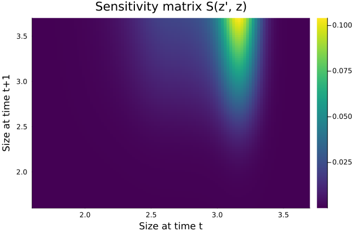
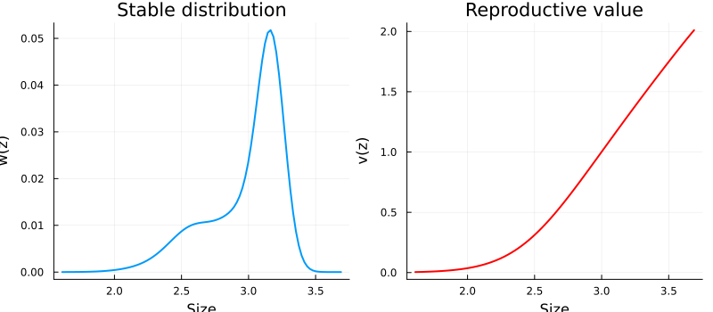
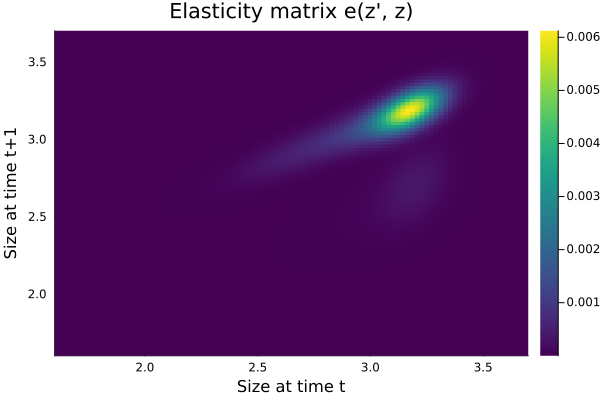
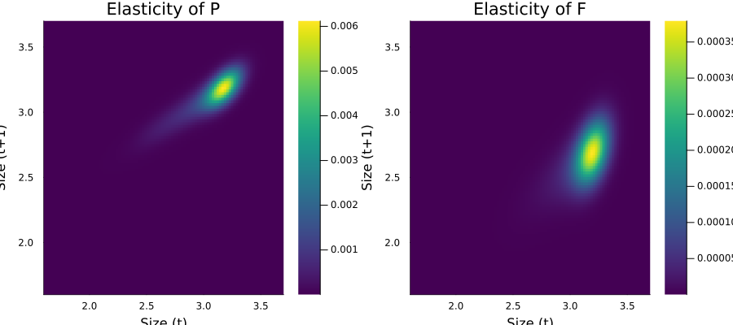
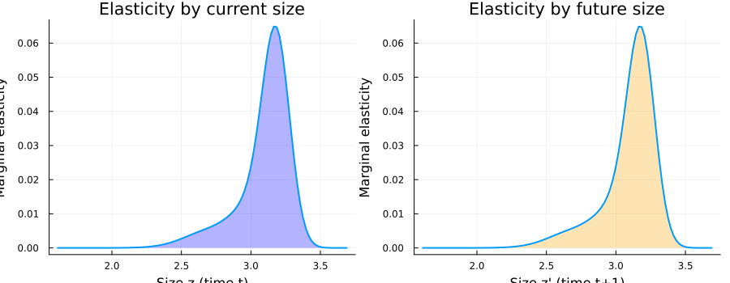
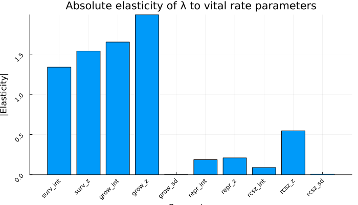

Sensitivity and Elasticity Analysis
Overview
Perturbation analysis quantifies how the population growth rate $\lambda$ responds to changes in the projection kernel. Two key measures are:
- Sensitivity: $\frac{\partial \lambda}{\partial K(z', z)} = \frac{v(z') \, w(z)}{\langle v, w \rangle}$ — the absolute change in $\lambda$ for a small additive change to $K(z', z)$
- Elasticity: $e(z', z) = \frac{K(z', z)}{\lambda} \cdot \frac{\partial \lambda}{\partial K(z', z)}$ — the proportional change in $\lambda$ for a proportional change to $K(z', z)$
A fundamental property is that the elasticities sum to 1, and the elasticities of the P and F kernels sum to the respective contributions to $\lambda$.
This vignette uses the Soay sheep (ungulate) model from the previous vignette.
Setup
using IntegralProjectionModels
using Distributions
using LinearAlgebra
using PlotsSoay Sheep Model
# Parameters
surv_int = -9.65; surv_z = 3.77
grow_int = 1.41; grow_z = 0.557; grow_sd = 0.0799
repr_int = -7.23; repr_z = 2.60
recr_int = 1.93
rcsz_int = 0.362; rcsz_z = 0.709; rcsz_sd = 0.159
# Domain
domain = ContinuousDomain(1.6, 3.7, 100)
z = meshpoints(domain)
h = step_size(domain)
# Vital rates
s_z(z) = 1.0 / (1.0 + exp(-(surv_int + surv_z * z)))
g_z1z(z_prime, z) = pdf(Normal(grow_int + grow_z * z, grow_sd), z_prime)
pb_z(z) = 1.0 / (1.0 + exp(-(repr_int + repr_z * z)))
pr_z() = 1.0 / (1.0 + exp(-recr_int))
c_z1z(z_prime, z) = pdf(Normal(rcsz_int + rcsz_z * z, rcsz_sd), z_prime)
function F_z1z(z_prime, z)
return s_z(z) * pb_z(z) * 0.5 * pr_z() * c_z1z(z_prime, z)
end
# Kernels
P = PKernel(CustomVitalRate(s_z), CustomVitalRate(g_z1z), domain)
F = FKernel(CustomVitalRate(F_z1z), domain)
K = P + F
# Solve
n0 = uniform_population(domain)
prob = IPMProblem(K, domain, n0, (0, 100))
sol = solve(prob, EigenAnalysis())
λ = lambda(sol)1.0202608060555791println("λ = ", round(λ, digits=6))λ = 1.020261Sensitivity Matrix
The sensitivity matrix $S(z', z)$ gives the absolute effect of a small additive change to $K(z', z)$ on $\lambda$:
$
S(z', z) = \frac{v(z') \, w(z)}{\langle v, w \rangle} $
where $w$ is the stable distribution (right eigenvector) and $v$ is the reproductive value (left eigenvector).
S = sensitivity(sol)
heatmap(z, z, S,
xlabel="Size at time t",
ylabel="Size at time t+1",
title="Sensitivity matrix S(z', z)",
color=:viridis)
# Sensitivity peaks where reproductive value × stable distribution is largest
v = reproductive_value(sol)
w = stable_distribution(sol)
p1 = plot(z, w, xlabel="Size", ylabel="w(z)",
title="Stable distribution", label=false, linewidth=2)
p2 = plot(z, v, xlabel="Size", ylabel="v(z)",
title="Reproductive value", label=false, linewidth=2, color=:red)
plot(p1, p2, layout=(1, 2), size=(800, 350))
Elasticity Matrix
The elasticity matrix gives the proportional sensitivity — the proportional change in $\lambda$ for a proportional change in $K(z', z)$:
$
e(z', z) = \frac{K(z', z)}{\lambda} \cdot S(z', z) $
E = elasticity(sol)
heatmap(z, z, E,
xlabel="Size at time t",
ylabel="Size at time t+1",
title="Elasticity matrix e(z', z)",
color=:viridis)
Elasticities Sum to 1
A key property of the elasticity matrix is that its elements sum to 1 (when scaled by $h^2$ for the double integral over the continuous domain):
$
\intL^U \intL^U e(z', z) \, dz' \, dz = 1 $
In the discretized version, the sum of all matrix elements equals 1:
println("Sum of elasticities: ", round(sum(E), digits=10))Sum of elasticities: 1.0Decomposing P and F Contributions
We can compute the elasticity contributions from the P (survival-growth) and F (fecundity) kernels separately.
P_matrix = materialize(P)
F_matrix = materialize(F)
K_matrix = materialize(K)
# Elasticity of P: (P[i,j] / λ) * S[i,j]
E_P = (P_matrix ./ λ) .* S
E_F = (F_matrix ./ λ) .* S
e_P = sum(E_P)
e_F = sum(E_F)0.0925699810757838println("Elasticity contribution of P (survival-growth): ", round(e_P, digits=6))
println("Elasticity contribution of F (fecundity): ", round(e_F, digits=6))
println("Sum: ", round(e_P + e_F, digits=6))Elasticity contribution of P (survival-growth): 0.90743
Elasticity contribution of F (fecundity): 0.09257
Sum: 1.0p1 = heatmap(z, z, E_P, title="Elasticity of P",
xlabel="Size (t)", ylabel="Size (t+1)", color=:viridis)
p2 = heatmap(z, z, E_F, title="Elasticity of F",
xlabel="Size (t)", ylabel="Size (t+1)", color=:viridis)
plot(p1, p2, layout=(1, 2), size=(900, 400))
Biological Interpretation
For Soay sheep, most of the elasticity is in the P kernel (survival-growth), meaning $\lambda$ is more sensitive to proportional changes in survival and growth than to proportional changes in fecundity. This is typical for long-lived iteroparous species.
Size-Specific Elasticity
We can marginalize the elasticity matrix to see which sizes contribute most:
# Marginal elasticity over z' (contribution of size z at time t)
e_by_size = vec(sum(E, dims=1))
# Marginal elasticity over z (contribution of size z' at time t+1)
e_by_size_prime = vec(sum(E, dims=2))
p1 = plot(z, e_by_size, xlabel="Size z (time t)",
ylabel="Marginal elasticity",
title="Elasticity by current size",
label=false, linewidth=2, fill=(0, 0.3, :blue))
p2 = plot(z, e_by_size_prime, xlabel="Size z' (time t+1)",
ylabel="Marginal elasticity",
title="Elasticity by future size",
label=false, linewidth=2, fill=(0, 0.3, :orange))
plot(p1, p2, layout=(1, 2), size=(900, 350))
Sensitivity of Lambda to Vital Rate Parameters
While the kernel-level sensitivity and elasticity are useful, we often want to know how $\lambda$ responds to changes in specific vital rate parameters. We can estimate this numerically by perturbing each parameter and recomputing $\lambda$.
function compute_lambda(params)
si, sz, gi, gz, gsd, ri, rz, rci, rci_z, rci_sd = params
s(z) = 1.0 / (1.0 + exp(-(si + sz * z)))
g(z_prime, z) = pdf(Normal(gi + gz * z, gsd), z_prime)
pb(z) = 1.0 / (1.0 + exp(-(ri + rz * z)))
function fec(z_prime, z)
s(z) * pb(z) * 0.5 * pr_z() * pdf(Normal(rci_z * z + rci, rci_sd), z_prime)
end
P_k = PKernel(CustomVitalRate(s), CustomVitalRate(g), domain)
F_k = FKernel(CustomVitalRate(fec), domain)
K_k = materialize(P_k) + materialize(F_k)
e = eigen(K_k)
return real(e.values[argmax(real.(e.values))])
end
base_params = [surv_int, surv_z, grow_int, grow_z, grow_sd,
repr_int, repr_z, rcsz_int, rcsz_z, rcsz_sd]
param_names = ["surv_int", "surv_z", "grow_int", "grow_z", "grow_sd",
"repr_int", "repr_z", "rcsz_int", "rcsz_z", "rcsz_sd"]
# Numerical sensitivity: ∂λ/∂θ ≈ (λ(θ+ε) - λ(θ-ε)) / (2ε)
ε = 1e-5
sensitivities_param = Float64[]
for i in eachindex(base_params)
p_plus = copy(base_params); p_plus[i] += ε
p_minus = copy(base_params); p_minus[i] -= ε
dλ = (compute_lambda(p_plus) - compute_lambda(p_minus)) / (2ε)
push!(sensitivities_param, dλ)
end
# Elasticity: (θ/λ) × ∂λ/∂θ
elasticities_param = sensitivities_param .* base_params ./ λ10-element Vector{Float64}:
-1.3384783268062015
1.5387020973582197
1.6507757902983882
1.9910457276096833
-0.0002808236807217221
-0.18706040292697193
0.2095235972031154
0.08898042219592932
0.5464730237877669
0.008744907540619762println("Parameter sensitivities and elasticities:")
println("-" ^ 55)
for i in eachindex(param_names)
println(" $(rpad(param_names[i], 10)): ",
"sens = $(lpad(round(sensitivities_param[i], sigdigits=4), 10)), ",
"elas = $(lpad(round(elasticities_param[i], sigdigits=4), 10))")
endParameter sensitivities and elasticities:
-------------------------------------------------------
surv_int : sens = 0.1415, elas = -1.338
surv_z : sens = 0.4164, elas = 1.539
grow_int : sens = 1.194, elas = 1.651
grow_z : sens = 3.647, elas = 1.991
grow_sd : sens = -0.003586, elas = -0.0002808
repr_int : sens = 0.0264, elas = -0.1871
repr_z : sens = 0.08222, elas = 0.2095
rcsz_int : sens = 0.2508, elas = 0.08898
rcsz_z : sens = 0.7864, elas = 0.5465
rcsz_sd : sens = 0.05611, elas = 0.008745bar(param_names, abs.(elasticities_param),
xlabel="Parameter", ylabel="|Elasticity|",
title="Absolute elasticity of λ to vital rate parameters",
label=false, rotation=45, size=(700, 400))
Summary
In this vignette we:
- Computed the sensitivity matrix $S(z', z) = v(z') w(z) / \langle v, w \rangle$
- Computed the elasticity matrix $e(z', z) = K(z', z) S(z', z) / \lambda$
- Verified that elasticities sum to 1
- Decomposed elasticities into P and F contributions — for Soay sheep, survival-growth (P) dominates
- Computed numerical sensitivities and elasticities of $\lambda$ to individual vital rate parameters